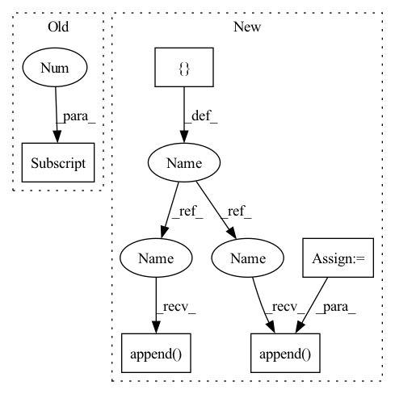

Pattern ID :1361

Before Change
self.fc1 = nn.Linear(self.pose, self.hidden_units[0])
self.fc2 = nn.Linear(self.hidden_units[0], self.hidden_units[1])
self.fc3 = nn.Linear(self.hidden_units[1], self.hidden_units[2])
self.fc4 = nn.Linear(self.hidden_units[2], self.hidden_units[3])
self.fc5 = nn.Linear(self.hidden_units[3], self.hidden_units[4])
self.fc6 = nn.Linear(self.hidden_units[4], self.dof)
After Change
)
print(f"input dimentsions: {self.hidden_units}")
layers = []
input_dim = self.pose
for output_dim in self.hidden_units:
layers.append(nn.Linear(input_dim, output_dim))
layers.append(nn.ReLU())
input_dim = output_dim
layers.append(nn.Linear(input_dim, self.dof))
self.layers = nn.Sequential(*layers)
def forward(self, x):
return self.layers(x)
In pattern: SUPERPATTERN
Frequency: 3
Non-data size: 5
Instances
Fragment ID: 3883963
Project Name: youtalk/iknet-open-manipulator-x
Commit Name: 492ac3f9080782b43c9961a321689afeed47805c
Time: 2021-05-03
Author: yutaka.kondo@youtalk.jp
File Name: iknet.py
M Class Name: IKNet
N Class Name: IKNet
M Method Name: __init__(2)
N Method Name: __init__(2)
M Parent Class: nn.Module
N Parent Class: nn.Module
M File Name: iknet.py
N File Name: iknet.py
M Start Line: 33
M End Line: 46
N Start Line: 33
N End Line: 49
'>
Before Change
layers.append(MiniBatchStd())
layers += [
EqualizedConv2d(resl2ch[4]+1, resl2ch[4], 3, padding=1, bias=False),
FusedLeakyReLU(resl2ch[4]),
Flatten(),
EqualizedLinear(resl2ch[4]*4**2, resl2ch[4]),
After Change
def __init__(self, image_size=128, image_channels=3, channels=32, max_channels=512, block_num_conv=2, mbsd_groups=4):
super().__init__()
check_c = functools.partial(min, max_channels)
ochannels = channels
self.from_rgb = nn.Sequential(
Conv2d("elr", image_channels, ochannels, 1),
nn.LeakyReLU(0.2, inplace=True)
)
resl = image_size
blocks = []
while resl > 4:
resl = resl // 2
channels *= 2
ichannels, ochannels = ochannels, check_c(channels)
blocks.append(
DBlock(ichannels, ochannels, block_num_conv)
)
blocks.append(MiniBatchStdDev(mbsd_groups))
blocks.extend([
Conv2d("elr", ochannels+1, ochannels, 3, padding=1),
nn.LeakyReLU(0.2, inplace=True),
Flatten(),
'>
Fragment ID: 3883961
Project Name: stomoya/animeface
Commit Name: b3652bae109c713da926d5532eb014b02135da52
Time: 2020-12-14
Author: blackie0110@gmail.com
File Name: implementations/StyleGAN2/model.py
M Class Name: Discriminator
N Class Name: Discriminator
M Method Name: __init__(7)
N Method Name: __init__(1)
M Parent Class: nn.Module
N Parent Class: nn.Module
M File Name: implementations/StyleGAN2/model.py
N File Name: implementations/StyleGAN2/model.py
M Start Line: 354
M End Line: 387
N Start Line: 364
N End Line: 389
'>
Before Change
)
print(f"input dimentsions: {self.hidden_units}")
self.fc1 = nn.Linear(self.pose, self.hidden_units[0])
self.fc2 = nn.Linear(self.hidden_units[0], self.hidden_units[1])
self.fc3 = nn.Linear(self.hidden_units[1], self.hidden_units[2])
self.fc4 = nn.Linear(self.hidden_units[2], self.hidden_units[3])
After Change
)
print(f"input dimentsions: {self.hidden_units}")
layers = []
input_dim = self.pose
for output_dim in self.hidden_units:
layers.append(nn.Linear(input_dim, output_dim))
layers.append(nn.ReLU())
input_dim = output_dim
layers.append(nn.Linear(input_dim, self.dof))
self.layers = nn.Sequential(*layers)
def forward(self, x):
return self.layers(x)
'>
Fragment ID: 3883960
Project Name: youtalk/iknet
Commit Name: 492ac3f9080782b43c9961a321689afeed47805c
Time: 2021-05-03
Author: yutaka.kondo@youtalk.jp
File Name: iknet.py
M Class Name: IKNet
N Class Name: IKNet
M Method Name: __init__(2)
N Method Name: __init__(2)
M Parent Class: nn.Module
N Parent Class: nn.Module
M File Name: iknet.py
N File Name: iknet.py
M Start Line: 33
M End Line: 46
N Start Line: 33
N End Line: 49